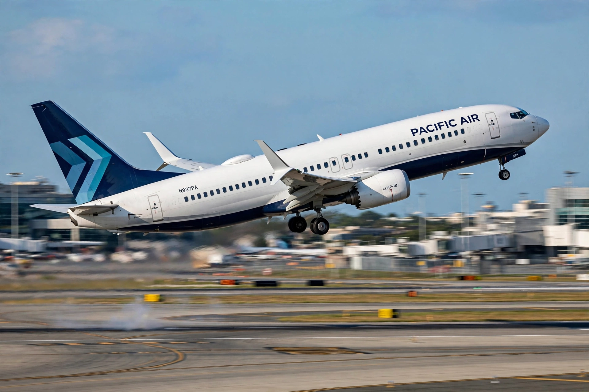

| Boeing 737 MAX | |
|---|---|
| Role | Narrow-body airliner |
| Manufacturer | Boeing Commercial Airplanes |
| First flight | 29 January 2016 |
| Introduction | 22 May 2017 (Malindo Air) |
| Status | In service, in production |
| Variants | MAX 7, MAX 8, MAX 8-200, MAX 9, MAX 10 |
| Engines | 2 × CFM International LEAP-1B |
| Developed from | Boeing 737 Next Generation |

The Boeing 737 MAX is the fourth generation of the Boeing 737, a narrow-body airliner developed by Boeing Commercial Airplanes. It succeeds the Boeing 737 Next Generation and competes with the Airbus A320neo family. The MAX features more efficient CFM International LEAP-1B engines, aerodynamic improvements including split-tip winglets, and airframe modifications. It was grounded worldwide from March 2019 to November 2020 — and in China and some other jurisdictions for longer — after two fatal crashes, Lion Air Flight 610 and Ethiopian Airlines Flight 302, killed 346 people and were linked to the Maneuvering Characteristics Augmentation System (MCAS).
Boeing launched the 737 MAX in August 2011 under competitive pressure from the Airbus A320neo and a major order decision by American Airlines. To minimise certification and training changes, Boeing re-engined the existing 737 rather than designing a clean-sheet aircraft. The larger LEAP-1B engines were mounted higher and further forward on the wing; the resulting change in pitch behaviour at high angles of attack was countered by the MCAS flight-control software, which automatically trimmed the stabiliser nose-down. The MAX first flew on 29 January 2016 and entered service with Malindo Air in May 2017.
On 29 October 2018, Lion Air Flight 610 crashed into the Java Sea shortly after takeoff from Jakarta, killing all 189 aboard; on 10 March 2019, Ethiopian Airlines Flight 302 crashed near Addis Ababa, killing all 157. Investigations found that in both accidents a faulty angle-of-attack sensor triggered MCAS repeatedly, overpowering the crews, and that Boeing had not adequately disclosed the system's authority or behaviour to pilots and regulators. The type was grounded worldwide on 13 March 2019. Boeing redesigned MCAS to use both angle-of-attack sensors, limited its authority, and revised training; the US Federal Aviation Administration cleared the MAX to return in November 2020, with other regulators following over the next two years.
The crisis cost Boeing more than $20 billion in compensation, settlements and lost production; the company entered a deferred prosecution agreement with the US Department of Justice and paid a $2.5 billion settlement in 2021. On 5 January 2024, a door plug blew out on Alaska Airlines Flight 1282, a nearly new 737 MAX 9, prompting a temporary grounding of MAX 9s with the same configuration, an FAA production cap, and renewed scrutiny of Boeing's manufacturing quality. The MAX 7 and MAX 10 variants remained uncertified for several years pending resolution of engine anti-ice and other issues.
The family comprises the shortened MAX 7, the baseline MAX 8 and high-density MAX 8-200, the stretched MAX 9, and the further-stretched MAX 10. The 737 MAX accumulated more than 4,000 orders before the grounding and remains, with the A320neo, one of the two dominant single-aisle families, though its delivery backlog and production rates lagged Airbus for years after the crisis.